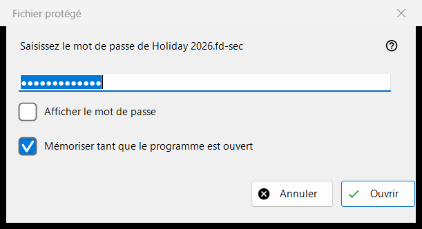
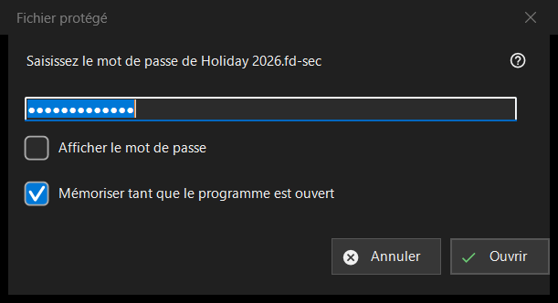

Fichier protégé
Objectif
Demande le mot de passe d'un conteneur protégé, un fichier .fd-sec, lorsqu'il arrive à l'écran. La fenêtre s'ouvre lorsque vous appuyez sur Entrée ou cliquez sur le fichier verrouillé, et d'elle-même dès que vous vous arrêtez sur un tel fichier ; un diaporama saute les fichiers protégés et les compte. Le contenu est affiché depuis la mémoire : rien de déchiffré n'est écrit sur le disque. Version moderne du programme uniquement.


Dans cet ordre
- Saisissez le mot de passe ; il est masqué.
- Cochez «Mémoriser tant que le programme est ouvert» si d'autres conteneurs utilisent le même mot de passe.
- Appuyez sur «Ouvrir» (Entrée).
- «Annuler» (Esc) laisse le fichier verrouillé.
Les éléments
Le mot de passe
L'invite nomme le fichier. «Afficher le mot de passe» est désactivé au départ. Le mot de passe est utilisé exactement tel que saisi et vérifié hors du fil principal, de sorte que le programme reste réactif pendant que la lente dérivation de clé s'exécute ; il n'est jamais écrit dans le registre, dans un fichier ni dans le magasin Windows.
Mémoriser tant que le programme est ouvert
Coché par défaut. Il conserve le mot de passe en mémoire jusqu'à la fermeture du programme, et seulement après qu'un conteneur s'est réellement ouvert avec lui ; le programme l'essaie ensuite en silence sur les conteneurs suivants et ne demande que lorsqu'il ne convient pas.
Un refus et un mot de passe vide
Après une tentative échouée, la fenêtre revient avec «Il ne s'est pas ouvert : le mot de passe peut être faux, le fichier n'a peut-être jamais été un conteneur, ou il a été modifié.» Ces cas se ressemblent volontairement : une mauvaise clé et un octet modifié ne se distinguent pas. Un conteneur endommagé ou non pris en charge reçoit son propre message et aucune fenêtre de mot de passe. Un mot de passe vide est accepté, mais le premier appui sur Entrée affiche «Un mot de passe vide n'est pas une protection : un tel fichier est seulement caché à un regard distrait. Appuyez encore pour l'ouvrir.» et le deuxième appui ouvre le fichier.
Annuler
Annuler, Esc et la case de fermeture sont un seul chemin et ne changent rien. Le fichier affiche «Un mot de passe est nécessaire - appuyez sur Entrée ou cliquez sur le fichier», et le programme ne le redemande pas tant que ce dossier reste ouvert. Entrée ou un clic sur le fichier le redemande.